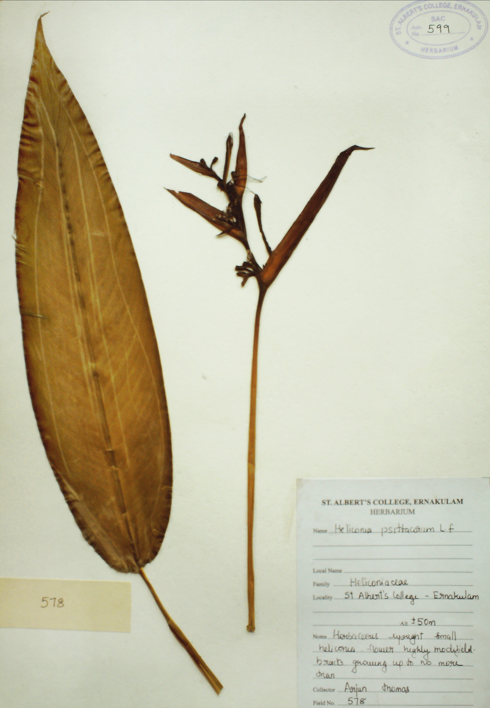
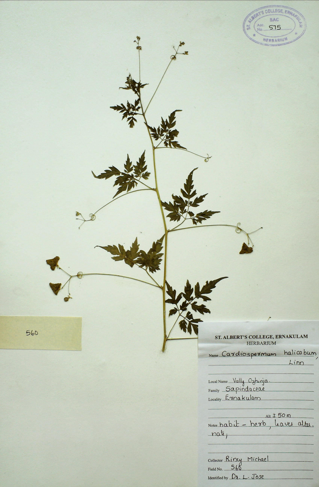
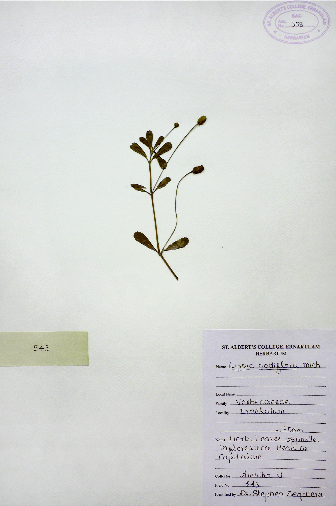

Angiosperms Section
Angiosperms are vascular plants with stems, roots, and leaves. The seeds of the angiosperm are found in a flower. These make up the majority of all plants on earth. The seeds develop inside the plant organs and form fruit. Hence, they are also known as flowering plants. Angiosperms are the most advanced and beneficial group of plants. They can grow in various habitats as trees, herbs, shrubs, and bushes. The classification of angiosperms:
- Monocotyledons
- Dicotyledons

Name:Heliconia psittacorum L.f
Family:Heliconiaceae
Alt:+-50m

Name:Cardiospermum halicabum Linn
Family:Sapindaceae
Local Name:Valley Ozhinja
Alt:+-50m
